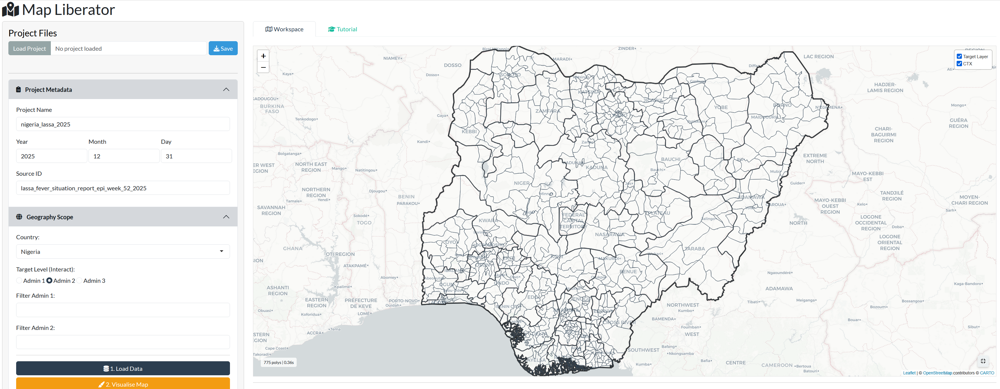
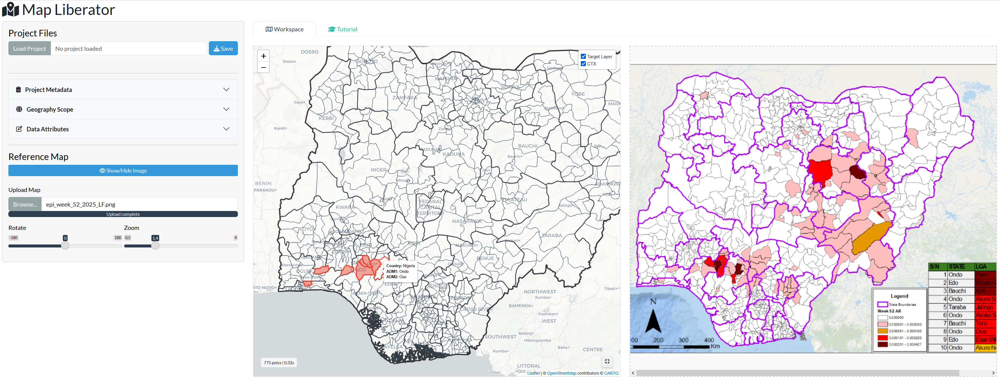
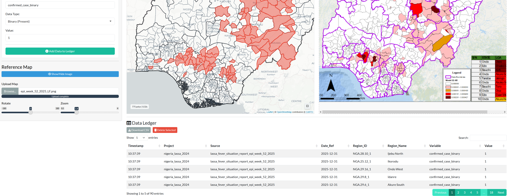
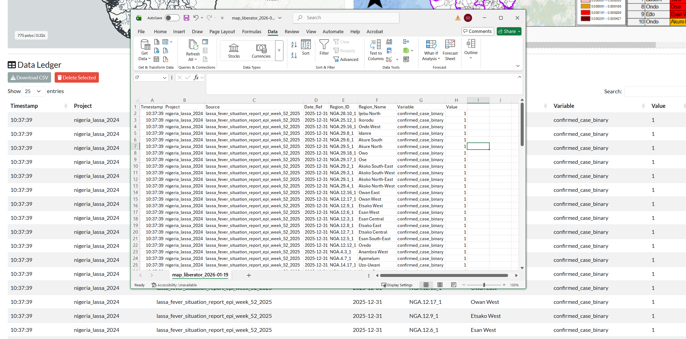

Map Liberator Tutorial
Introduction
Map Liberator is a tool for extracting spatial data (counts, presence/absence, or notes) from static map images (like Situation Reports) by matching them to official administrative boundaries.
This guide uses a standard workflow: extracting Lassa Fever case data from a Nigeria NCDC Situation Report.
1. Project Management
Located at the top of the Sidebar.
Before starting, you can choose how to manage your session:
- Load Project: If you have a previously saved
.rdsfile, upload it here to restore your rows and settings. - Save Project: Click this at any time to download a snapshot of your current work (including the ledger and metadata).
2. Project Metadata
Sidebar Panel 1
Define the context for the data you are about to extract. This Project Metadata is attached to every row you add to the ledger.
- Project Name: A unique name for this extraction task (e.g.
nigeria_lassa_2025). - Date: The reference date of the source map (Year, Month, Day).
- Source ID: A specific identifier for the document (e.g.,
lassa_fevr_situation_report_epi_week_52_2025).
3. Geography Scope
Sidebar Panel 2
Set up the “Canvas” for your extraction using the Geography Scope panel.
- Country: Select the country from the dropdown (e.g.
Nigeria). - Target Level: Choose the administrative level you need to interact with:
- Admin 1: States/Provinces.
- Admin 2: Districts/LGAs.
- Admin 3: Borough.
- Filters (Optional): If you only need a specific part of the country (e.g., “England”), select it in the Filter dropdowns. This makes the map faster and less cluttered.
- Actions:
- 1. Load Data: Downloads and processes the boundaries.
- 2. Visualise Map: Draws the boundaries on the main screen.
- 3. Zoom: Recenters the map on your data.
Result: You will see the empty administrative boundaries ready for data entry.
 Figure 1: The “Canvas” - Admin 2 boundaries loaded and ready.
4. The Reference Map
Sidebar “Reference Map” Section
If you are digitizing from an external image.
Load the Image 1. Scroll down to the Reference Map section. 2. Upload: Select your static map image (PNG/JPG). 3. Toggle: Click the blue Show/Hide Image button to open the split-screen view.
Align the Views 1. Map: Use the Expand Map button (bottom-right of the map) to enlarge the view. Zoom into a recognisable area (e.g., Edo State). 2. Image: Use the Rotate and Zoom sliders in the sidebar to orient the source image so “North” aligns with the interactive map.
 Figure 2: The Split-Screen - Interactive map (left) aligned with the source SitRep (right).
5. Data Extraction
Sidebar Panel 3 + Main Map
This is the core workflow for adding data using the Data Attributes panel.
- Define Attributes:
- Variable Name: What are you counting? (e.g.,
confirmed_cases_binary). - Data Type: Choose Numeric (for counts), Binary (for presence) or Text (for other data).
- Value: Enter the value for the regions you are about to click (e.g.,
1).
- Variable Name: What are you counting? (e.g.,
- Select Regions:
- Click regions on the map. They will turn RED.
- Tip: You can select multiple regions at once if they share the same value.
- Add to Ledger:
- Click the green Add Data to Ledger button.
- A notification will confirm success.
 Figure 3: Selection - Target regions highlighted in RED vs. unselected grey regions.
6. The Data Ledger
Located below the Map
This table records every extraction you make.
- Review: Check that the Region Name and Value match what you intended.
- Delete: If you made a mistake, click the row(s) to highlight them, then click the red Delete Selected button.
- Download CSV: When finished, click this to export your clean dataset for analysis.
 Figure 4: The Ledger - The final structured output ready for analysis.